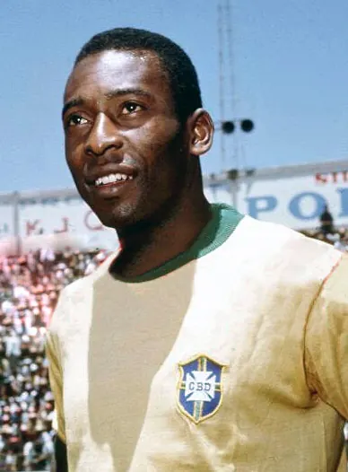

The profile
Pelé
Pelé was born Edson Arantes do Nascimento in Três Corações, Brazil, and grew up in Bauru. He learned the game while still a boy and joined Santos as a teenager.
He spent almost all of his club career at Santos before joining the New York Cosmos. He paired explosive movement and close control with a rare range of finishing, heading and passing. More than a scorer, he could draw defenders toward him and then release teammates into the space they left.
Pelé announced himself at the 1958 World Cup as a teenager, scoring six goals and twice in the final as Brazil won its first title. Injury limited his part in the 1962 victory, but he returned as the creative centre of the 1970 champions. His opening header against Italy in that final helped set Brazil on the way to a 4–1 win and a third World Cup.
1958Sweden
Champion
Group D Brazil2 : 0Soviet Union
- VAVA3′
- VAVA77′
Brazilhome
Starting lineup
- GILMAR
- BELLINI
- NILTON SANTOS
- DE SORDI
- ORLANDO
- DIDI
- ZITO
- Mario ZAGALLO
- PELE
- GARRINCHA
- VAVA
Substitutions
- No substitutions
Soviet Unionaway
Starting lineup
- Lev YASHIN
- Vladimir KESAREV
- Konstantin KRIZHEVSKI
- Boris KUZNETSOV
- Juri VOINOV
- Igor NETTO
- Viktor TSARYOV
- Valentin IVANOV
- Nikita SIMONYAN
- Anatoli ILYIN
- Aleksandr IVANOV
Substitutions
- No substitutions
Quarter-final Brazil1 : 0Wales
- PELE66′
Brazilhome
Starting lineup
- GILMAR
- BELLINI
- NILTON SANTOS
- DE SORDI
- ORLANDO
- DIDI
- ZITO
- Mario ZAGALLO
- PELE
- GARRINCHA
- Jose ALTAFINI
Substitutions
- No substitutions
Walesaway
Starting lineup
- Jack KELSEY
- Stuart WILLIAMS
- Mel HOPKINS
- Derek SULLIVAN
- Mel CHARLES
- David BOWEN
- Terry MEDWIN
- Ron HEWITT
- Ivor ALLCHURCH
- Cliff JONES
- Colin WEBSTER
Substitutions
- No substitutions
Semi-final Brazil5 : 2France
- VAVA2′
- DIDI39′
- PELE52′
- PELE64′
- PELE75′
- Just FONTAINE9′
- Roger PIANTONI83′
Brazilhome
Starting lineup
- GILMAR
- BELLINI
- NILTON SANTOS
- DE SORDI
- ORLANDO
- DIDI
- ZITO
- Mario ZAGALLO
- PELE
- GARRINCHA
- VAVA
Substitutions
- No substitutions
Franceaway
Starting lineup
- Claude ABBES
- Raymond KAELBEL
- Andre LEROND
- Robert JONQUET
- Jean-Jacques MARCEL
- Armand PENVERNE
- Just FONTAINE
- Raymond KOPA
- Roger PIANTONI
- Jean VINCENT
- Maryan WISNIEWSKI
Substitutions
- No substitutions
Final Brazil5 : 2Sweden
- VAVA9′
- VAVA32′
- PELE55′
- Mario ZAGALLO68′
- PELE90′
- Nils LIEDHOLM4′
- Agne SIMONSSON80′
Brazilhome
Starting lineup
- GILMAR
- BELLINI
- DJALMA SANTOS
- NILTON SANTOS
- ORLANDO
- DIDI
- ZITO
- Mario ZAGALLO
- PELE
- GARRINCHA
- VAVA
Substitutions
- No substitutions
Swedenaway
Starting lineup
- Kalle SVENSSON
- Orvar BERGMARK
- Sven AXBOM
- Nils LIEDHOLM
- Sigge PARLING
- Gunnar GREN
- Bengt GUSTAVSSON
- Reino BORJESSON
- Kurt HAMRIN
- Agne SIMONSSON
- Lennart SKOGLUND
Substitutions
- No substitutions
1962Chile
Champion
Group C Brazil2 : 0Mexico
- Mario ZAGALLO56′
- PELE73′
Brazilhome
Starting lineup
- GILMAR
- DJALMA SANTOS
- MAURO RAMOS
- ZOZIMO
- NILTON SANTOS
- ZITO
- DIDI
- GARRINCHA
- PELE
- VAVA
- Mario ZAGALLO
Substitutions
- No substitutions
Mexicoaway
Starting lineup
- Antonio CARBAJAL
- Jesus DEL MURO
- Guillermo SEPULVEDA
- Jose VILLEGAS
- Raul CARDENAS
- Pedro NAJERA
- Alfredo DEL AGUILA
- Salvador REYES
- Hector HERNANDEZ
- Isidoro DIAZ
- Antonio JASSO
Substitutions
- No substitutions
Group C Brazil0 : 0Czechoslovakia
Brazilhome
Starting lineup
- GILMAR
- DJALMA SANTOS
- MAURO RAMOS
- ZOZIMO
- NILTON SANTOS
- ZITO
- DIDI
- GARRINCHA
- PELE
- VAVA
- Mario ZAGALLO
Substitutions
- No substitutions
Czechoslovakiaaway
Starting lineup
- Viliam SCHROJF
- Jan LALA
- Jan POPLUHAR
- Ladislav NOVAK
- Svatopluk PLUSKAL
- Josef MASOPUST
- Josef STIBRANYI
- Andrej KVASNAK
- Adolf SCHERER
- Jozef ADAMEC
- Josef JELINEK
Substitutions
- No substitutions
1966England
Group stage
Group C Brazil2 : 0Bulgaria
- PELE15′
- GARRINCHA63′
Brazilhome
Starting lineup
- GILMAR
- DJALMA SANTOS
- BELLINI
- ALTAIR
- PAULO HENRIQUE
- DENILSON
- LIMA
- PELE
- GARRINCHA
- JAIRZINHO
- ALCINDO
Substitutions
- No substitutions
Bulgariaaway
Starting lineup
- Georgi NAIDENOV
- Aleksandar SHALAMANOV
- Ivan VUTSOV
- Boris GAGANELOV
- Dimitar PENEV
- Dinko DERMENDZHIEV
- Stoyan KITOV
- Dobromir JECHEV
- Georgi ASPARUKHOV
- Ivan KOLEV
- Dimitar YAKIMOV
Substitutions
- No substitutions
Group C Portugal3 : 1Brazil
- ANTONIO SIMOES15′
- EUSEBIO27′
- EUSEBIO85′
- RILDO73′
Portugalhome
Starting lineup
- JOSE PEREIRA
- VICENTE
- HILARIO
- MORAIS
- ALEXANDRE BAPTISTA
- MARIO COLUNA
- JAIME GRACA
- ANTONIO SIMOES
- JOSE AUGUSTO
- EUSEBIO
- JOSE TORRES
Substitutions
- No substitutions
Brazilaway
Starting lineup
- MANGA
- FIDELIS
- BRITO
- ORLANDO
- RILDO
- DENILSON
- LIMA
- PELE
- JAIRZINHO
- SILVA BATUTA
- PARANA
Substitutions
- No substitutions
1970Mexico
Champion
Group C Brazil4 : 1Czechoslovakia
- RIVELLINO24′
- PELE59′
- JAIRZINHO61′
- JAIRZINHO83′
- Ladislav PETRAS11′
Brazilhome
Starting lineup
- FELIX
- BRITO
- WILSON PIAZZA
- CARLOS ALBERTO
- EVERALDO
- CLODOALDO
- GERSON
- TOSTAO
- RIVELLINO
- JAIRZINHO
- PELE
Substitutions
- 62′PAULO CESAR on · GERSON off
Czechoslovakiaaway
Starting lineup
- Ivo VIKTOR
- Karol DOBIAS
- Vaclav MIGAS
- Vladimir HAGARA
- Alexander HORVATH
- Ladislav KUNA
- Ivan HRDLICKA
- Frantisek VESELY
- Ladislav PETRAS
- Jozef ADAMEC
- Karol JOKL
Substitutions
- 46′Andrej KVASNAK on · Ivan HRDLICKA off
- 75′Bohumil VESELY on · Frantisek VESELY off
Group C Brazil1 : 0England
- JAIRZINHO59′
Brazilhome
Starting lineup
- FELIX
- BRITO
- WILSON PIAZZA
- CARLOS ALBERTO
- EVERALDO
- CLODOALDO
- TOSTAO
- RIVELLINO
- PAULO CESAR
- JAIRZINHO
- PELE
Substitutions
- 68′ROBERTO on · TOSTAO off
Englandaway
Starting lineup
- Gordon BANKS
- Terry COOPER
- Brian LABONE
- Bobby MOORE
- Tommy WRIGHT
- Alan MULLERY
- Alan BALL
- Bobby CHARLTON
- Francis LEE
- Geoff HURST
- Martin PETERS
Substitutions
- 63′Jeff ASTLE on · Francis LEE off
- 63′Colin BELL on · Bobby CHARLTON off
Group C Brazil3 : 2Romania
- PELE19′
- JAIRZINHO22′
- PELE67′
- Florea DUMITRACHE34′
- Emerich DEMBROVSCHI84′
Brazilhome
Starting lineup
- FELIX
- BRITO
- WILSON PIAZZA
- CARLOS ALBERTO
- FONTANA
- EVERALDO
- CLODOALDO
- TOSTAO
- PAULO CESAR
- JAIRZINHO
- PELE
Substitutions
- 60′MARCO ANTONIO on · EVERALDO off
- 74′EDU on · CLODOALDO off
Romaniaaway
Starting lineup
- Stere ADAMACHE
- Ludovic SATMAREANU
- Nicolae LUPESCU
- Mihai MOCANU
- Cornel DINU
- Emerich DEMBROVSCHI
- Radu NUNWEILLER
- Ion DUMITRU
- Alexandru NEAGU
- Florea DUMITRACHE
- Mircea LUCESCU
Substitutions
- 27′Necula RADUCANU on · Stere ADAMACHE off
- 72′Gheorghe TATARU on · Florea DUMITRACHE off
Quarter-final Brazil4 : 2Peru
- RIVELLINO11′
- TOSTAO15′
- TOSTAO52′
- JAIRZINHO75′
- Alberto GALLARDO28′
- Teofilo CUBILLAS70′
Brazilhome
Starting lineup
- FELIX
- BRITO
- WILSON PIAZZA
- CARLOS ALBERTO
- MARCO ANTONIO
- CLODOALDO
- GERSON
- TOSTAO
- RIVELLINO
- JAIRZINHO
- PELE
Substitutions
- 67′PAULO CESAR on · GERSON off
- 80′ROBERTO on · JAIRZINHO off
Peruaway
Starting lineup
- Luis RUBINOS
- Eloy CAMPOS
- Hector CHUMPITAZ
- Nicolas FUENTES
- Jose FERNANDEZ
- Ramon MIFFLIN
- Roberto CHALLE
- Julio BAYLON
- Pedro LEON
- Teofilo CUBILLAS
- Alberto GALLARDO
Substitutions
- 54′Hugo SOTIL on · Julio BAYLON off
- 61′Eladio REYES on · Pedro LEON off
Semi-final Brazil3 : 1Uruguay
- CLODOALDO44′
- JAIRZINHO76′
- RIVELLINO89′
- Luis CUBILLA19′
Brazilhome
Starting lineup
- FELIX
- BRITO
- WILSON PIAZZA
- CARLOS ALBERTO
- EVERALDO
- CLODOALDO
- GERSON
- TOSTAO
- RIVELLINO
- JAIRZINHO
- PELE
Substitutions
- No substitutions
Uruguayaway
Starting lineup
- Ladislao MAZURKIEWICZ
- Atilio ANCHETA
- Roberto MATOSAS
- Luis UBINA
- Juan MUJICA
- Julio MONTERO
- Luis CUBILLA
- Ildo MANEIRO
- Julio CORTES
- Julio MORALES
- Dagoberto FONTES
Substitutions
- 77′Victor ESPARRAGO on · Ildo MANEIRO off
Final Brazil4 : 1Italy
- PELE18′
- GERSON66′
- JAIRZINHO71′
- CARLOS ALBERTO86′
- Roberto BONINSEGNA37′
Brazilhome
Starting lineup
- FELIX
- BRITO
- WILSON PIAZZA
- CARLOS ALBERTO
- EVERALDO
- CLODOALDO
- GERSON
- TOSTAO
- RIVELLINO
- JAIRZINHO
- PELE
Substitutions
- No substitutions
Italyaway
Starting lineup
- Enrico ALBERTOSI
- Tarcisio BURGNICH
- Giacinto FACCHETTI
- Pierluigi CERA
- Roberto ROSATO
- Mario BERTINI
- Sandro MAZZOLA
- Giancarlo DE SISTI
- Gigi RIVA
- Angelo DOMENGHINI
- Roberto BONINSEGNA
Substitutions
- 74′Antonio JULIANO on · Mario BERTINI off
- 84′Gianni RIVERA on · Roberto BONINSEGNA off